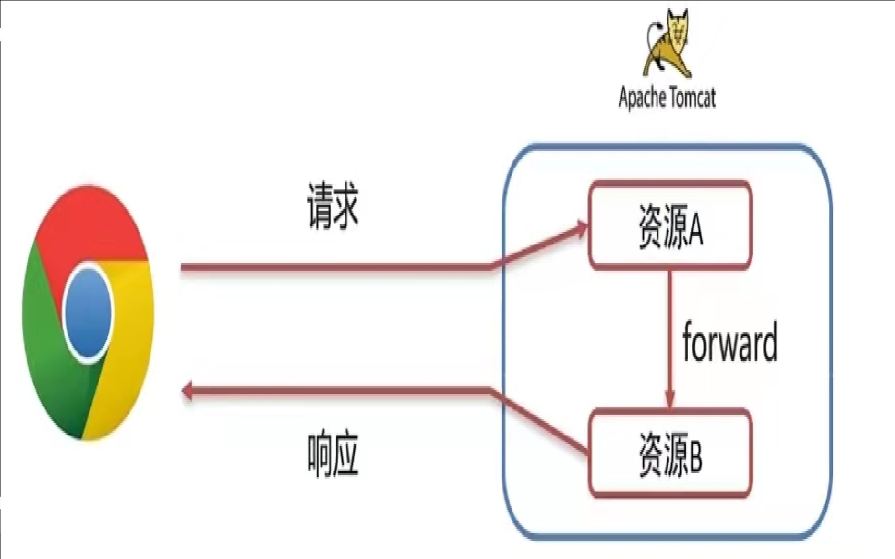

- Request继承体系
- Request获取请求数据
- Request请求转发
- Response设置响应数据功能介绍
- Response完成重定向
- Response响应字符数据
- Response响应字节数据
Request继承体系

- Tomcat需要解析请求数据，封装为request对象，并且创建request对象传递到service方法中
Request获取请求数据
请求数据分为3部分
请求行：
GET/REQUEST-DEMO/REP1?USERNAME=ZHANGSAN http/1.1- String getMethod():获取请求方式：GET
- String getContextPath():获取虚拟目录（目录访问路径）：
/request-demo - StringBuffer getRequestURL():
http://localhost:8080/request-demo/req1 - String getRequestURI():
/requet-demo/req1 - String getQueryString():
username=zhangsan&password=123
请求头：
User-Agent:Mozilla/5.0 Chrome/91.0.4472.106- String getHeader(String name):根据请求头名称，获取值
请求体：
username=superbay&password=123- ServletInputStream getInputStream()：获取字节流
- BufferedReader getReader():获取字符输入流
request.getParameterMap()用法笔记
在此之前，获取表单数据时总是用request.getParameter(“name”)，根据表单中的name值获取value值，需要获取几项就得重复写几次getParameter，而request.getParameterMap方法则不同，不需要参数，返回结果为Map<String,String[]> 。其实，request.getParameterMap()方法也是通过前台表单中的name值进行获取的，获取到后又进行了一次封装。 之所以返回的map中的value为字符串类型的数组，是为了解决表单中有多个name值一样的项。
Request请求参数中文乱码处理
请求参数如果存在中文数据，则会乱码
解决方案：
POST:设置输入流的编码
1
req.setCharacterEncoding("UTF-8");
Get：设置编码（先解码，再编码）
1
2
3byte[] bytes = username.getBytes("ISO-8859-1");
String username2 = new String(bytes, "UTF-8");
System.out.println(username2);URL编码解码实现方式
编码：
1
String encode = URLEncoder.encode(username, "utf-8");
解码：
1
String decode = URLDecoder.decode(encode, "ISO-8859-1");
Request请求转发
请求转发（forward）：一种再服务器内部的资源跳转方式

实现方式
req.getRequestDispatcher("资源B路径").forward(req,resp);请求转发资源间共享数据：使用Request对象
void setAttribute(String name,Object o):存储数据到request域中Object getAttribute(String name):根据key，获取值void removeAttribute(String name):根据key，删除该键值对
请求转发特点：
- 浏览器地址栏路径不发生变化
- 只能转发到当前服务器的内部资源
- 一次请求，可以在转发的资源间使用request共享数据
Response设置响应数据功能介绍
- 响应行：
HTTP/1.1 200 OKvoid setStaus(int sc)：设置响应状态码
- 响应头：
Content-Type:text/htmlvoid setHeader(String name,String value):设置响应头键值对
- 响应体：
<html><head>head><body></body></html>PrintWriter getWriter():获取字符输出流ServletOutputStream getOutputStream():获取字节输出流
Response完成重定向
重定向（Redirect）:一种资源跳转方式

实现方式：
resp.setStatus(302);resp.setHeader("location","资源B的路径")；resp.sendRedirect("资源B的路径")重定向特点：
- 浏览器地址栏路径发生变化
- 可以重定向到任意位置的资源（服务器内部、外部均可）
- 两次请求，不能再多个资源使用request共享数据
Response响应字符数据
使用：
通过Response对象获取字符输出流
1
PrintWriter writer=resp.getWriter();
写数据
writer.write(“aaa”);
注意
该流不需要关闭，随着响应结束，response对象销毁，由服务器关闭
中文数据乱码：原因听过Response获取的字符输出流默认编码：IOS-8859-1
1
resp.setContentType("text/html;charset=utf-8");
Response响应字节数据
使用：
通过Response对象获取字符输出流
1
ServletOutputStream os = resp.getOutputStream();
写数据
1
os.write(字节数据);
IOUtils工具类使用
导坐标
1
2
3
4
5<dependency>
<groupId>commons-io</groupId>
<artifactId>commons-io</artifactId>
<version>2.6</version>
</dependency>使用
1
IOUtils.copy(输入流，输出流)